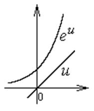
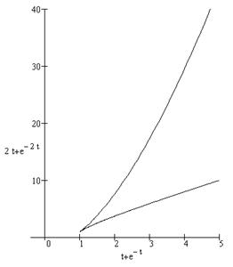

П19 2.№1.
Постройте кривую, заданную параметрически:  , ,
.
, ,
.
, ,
.РЕШЕНИЕ:

Возможные точки пересечения графика с
координатными осями – решения уравнений  и
и
 .
.
и
. Оба уравнения преобразуются к виду и решений не имеют, график функции
не пересекает координатных осей и полностью лежит в первом квадранте: , .
Более того, рассмотрев графики функций, входящих
в уравнение, можно убедиться, что , .
Частное значение: , .
График состоит из двух ветвей, исходящих из
точки ; одна соответствует  , вторая –
, вторая –  .
.
, вторая – . Для обеих ветвей ,
и при  ,
и при
,
и при  .
.
,
и при .Рассмотрим возможные асимптоты:
,
,
– правая
наклонная асимптота ветви графика, соответствующей .
,
.
, т.е., ветвь, соответствующая , асимптоты не имеет.
, асимптоты не имеет.Найдем первую производную:
, ,.
При :
: , ,
, , .
.При :
:,
,
,
,
т.е. при и, следовательно,  на этой ветви возрастает как .
на этой ветви возрастает как .
и, следовательно, на этой ветви возрастает как .Найдем вторую производную.
,
,
.
а каждой ветви графика сохраняется направление
выпуклости: при  , график выпукл вверх, при
, график выпукл вверх, при  ,
график выпукл вниз.
,
график выпукл вниз.
, график выпукл вверх, при ,
график выпукл вниз.
Ответ: при
 (точка возврата); - асимптота при
(точка возврата); - асимптота при
(точка возврата); - асимптота при